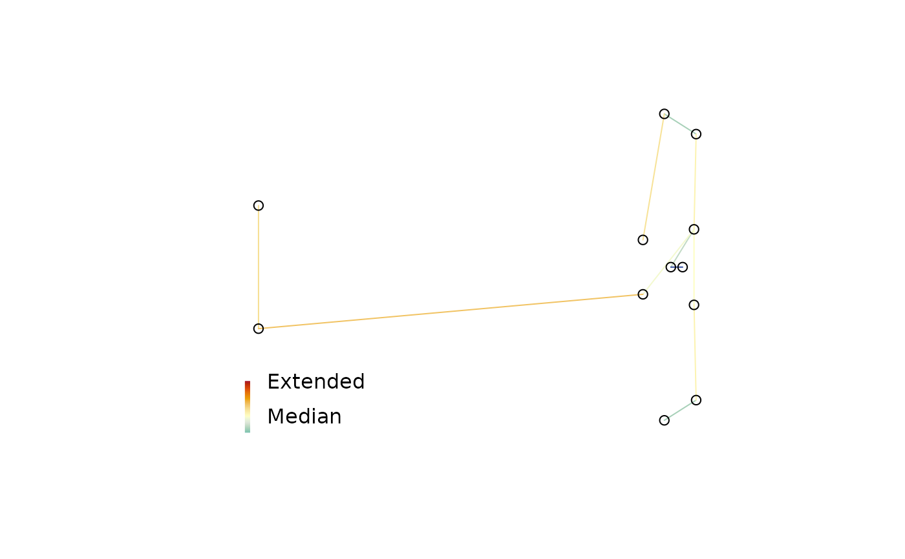

To identify strain in a multidimensional scaling of distances, it can be useful to plot a minimum spanning tree (Gower 1966; Smith 2022) . Colouring each edge of the tree according to its strain can identify areas where the mapping is stretched or compressed.
MSTSegments(mapping, mstEnds, ...)
StrainCol(
distances,
mapping,
mstEnds = MSTEdges(distances),
palette = rev(hcl.colors(256L, "RdYlBu"))
)Two-column matrix giving x and y coordinates of plotted points.
Two-column matrix identifying rows of mapping at end of
each edge of the MST, as output by TreeTools::MSTEdges().
Additional arguments to segments().
Matrix or dist object giving original distances between
each pair of points.
Vector of colours with which to colour edges.
StrainCol() returns a vector in which each entry is selected from
palette, with an attribute logStrain denoting the logarithm of the
mapped over original distance, shifted such that the median value is zero.
Palette colours are assigned centred on the median value, with entries
early in palette assigned to edges in which the ratio of mapped
distance to original distance is small.
Gower JC (1966).
“Some distance properties of latent root and vector methods used in multivariate analysis.”
Biometrika, 53(3/4), 325--338.
doi:10.2307/2333639
.
Smith MR (2022).
“Robust analysis of phylogenetic tree space.”
Systematic Biology, 71(5), 1255--1270.
doi:10.1093/sysbio/syab100
.
Other tree space functions:
MapTrees(),
MappingQuality(),
SpectralEigens(),
cluster-statistics,
median.multiPhylo()
set.seed(0)
library("TreeTools", quietly = TRUE, warn.conflicts = FALSE)
distances <- ClusteringInfoDist(as.phylo(5:16, 8))
mapping <- cmdscale(distances, k = 2)
mstEnds <- MSTEdges(distances)
# Set up blank plot
plot(mapping, asp = 1, frame.plot = FALSE, ann = FALSE, axes = FALSE,
type = "n")
# Add MST
MSTSegments(mapping, mstEnds,
col = StrainCol(distances, mapping, mstEnds))
# Add points at end so they overprint the MST
points(mapping)
SpectrumLegend(legend = c("Contracted", "Median", "Extended"),
palette = rev(hcl.colors(256L, "RdYlBu")))
